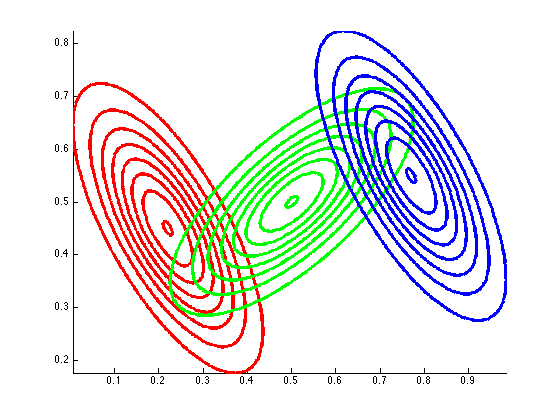
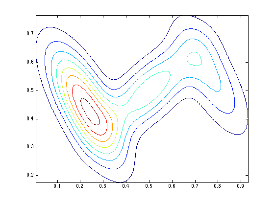
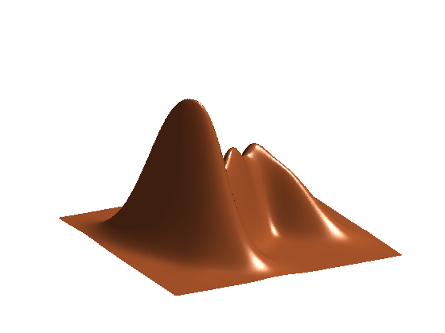
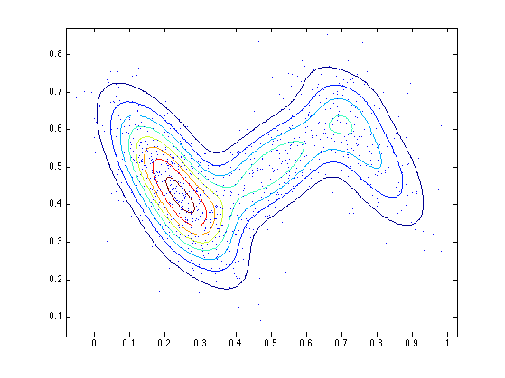

Plot a Mixture of Gaussians
function mixGaussPlotDemo()
mu = [0.22 0.45; 0.5 0.5; 0.77 0.55]';
Sigma2 = [0.018 0.01 ; 0.01 0.011];
Sigma1 = [0.011 -0.01 ; -0.01 0.018];
Sigma3 = Sigma1;
Sigma = cat(3, Sigma1, Sigma2, Sigma3);
mixmat = [0.5 0.3 0.2]';
figure; hold on;
colors = {'r', 'g', 'b'};
xrange = zeros(length(mixmat), 4);
for k=1:3
xrange(k, :) = gaussPlotRange(mu(:, k), Sigma(:, :, k));
model.mu = mu(:, k); model.Sigma = Sigma(:, :, k);
h = plotDistribution(@(X)gaussLogprob(model, X),...
'-useContour' , true ,...
'-npoints' , 200 ,...
'-scaleFactor' , mixmat(k),...
'-xrange' , xrange(k, :));
set(h, 'color' , colors{k}, 'linewidth', 3);
end
axis tight;
printPmtkFigure('mixgauss3Components')
xrangeMix = [min(xrange(:,1)), max(xrange(:,2)), min(xrange(:,3)), max(xrange(:,4))];
figure;
plotDistribution(@(X)mixGaussLogprob(mu, Sigma, mixmat, X), 'useLog', false, 'useContour', true, 'npoints', 200, 'xrange', xrangeMix);
axis tight;
printPmtkFigure('mixgauss3Contour');
 
figure;
h = plotDistribution(@(X)mixGaussLogprob(mu, Sigma, mixmat, X), ...
'useLog', false, 'useContour', false, 'npoints', 200, ...
'xrange', xrangeMix, 'plotArgs', {'linewidth', 3});
brown = [0.8 0.4 0.2];
set(h,'FaceColor',brown,'EdgeColor','none');
hold on;
view([-27.5 30]);
camlight right;
lighting phong;
axis off;
axis tight;
printPmtkFigure('mixgauss3Surf');

nsamples = 1000;
X = mixGaussSample(mu, Sigma, mixmat, nsamples);
figure;
plotDistribution(@(X)mixGaussLogprob(mu, Sigma, mixmat, X), 'useLog', false, 'useContour', true, 'npoints', 200, 'xrange', xrangeMix);
hold on
plot(X(:,1), X(:,2), '.');
axis tight;
printPmtkFigure('mixgauss3Samples');

end
function xrange = gaussPlotRange(mu, Sigma, sf)
if nargin < 3, sf = 3; end
C = Sigma;
s1 = sqrt(C(1,1));
x1min = mu(1)-sf*s1; x1max = mu(1)+sf*s1;
switch length(mu)
case 1, xrange = [x1min x1max];
case 2,
s2 = sqrt(C(2,2));
x2min = mu(2)-sf*s2; x2max = mu(2)+sf*s2;
xrange = [x1min x1max x2min x2max];
otherwise
d = ndimensions(obj);
xrange = zeros(d,d,4);
stdev = sqrt(diag(C));
for i=1:d
for j=1:i
xrange(i,j,:) = [mu(i) - sf*stdev(i), mu(i) + sf*stdev(i), mu(j) - sf*stdev(j), mu(j) + sf*stdev(j)];
xrange(j,i,:) = [mu(j) - sf*stdev(j), mu(j) + sf*stdev(j), mu(i) - sf*stdev(i), mu(i) + sf*stdev(i)];
end
end
end
end